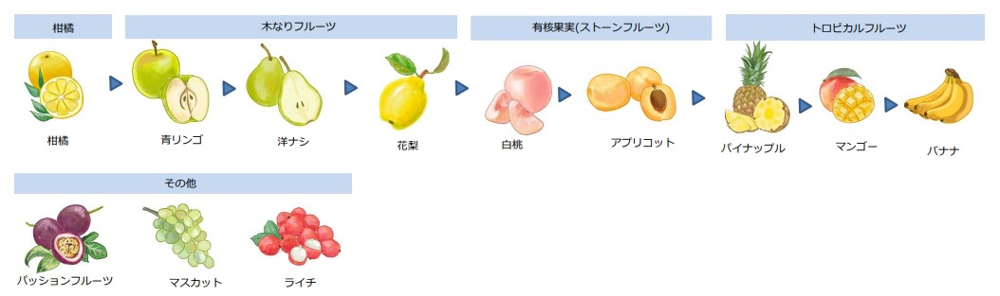

{% extends 'base.html' %}
{% block content %}

<p> 私のユーザ名は　{{myname}}　です</p>

<p>評価を実施します</p><div class="pb-5">
   
{% for winename in wine_selected %}
   
    <p>
        
         <div class="card" style="width: 70rem;">
                <strong> {{ loop.index }}：{{ winename.Brandname }} の評価　</strong> 
                <form action="/hyouka_regi" method="POST">
                辛口度合い:   
                <input type="number" name="score1_spicy"  size="13" min="0" max="5" placeholder="辛口度合い" >
                酸味度合い:
                <input type="number" name="score2_acidity" size="13" min="0" max="5" placeholder="酸味度合い" >
                トータルスコア:
                <input type="text" name="score3_total"  size="13" min="0" max="5" placeholder="トータルスコア" >
                <br><br> 
                
                香り1（果物）:
                <select name="sel_aroma_kudamono">
                    <option value="0">-</option>
                    <option value="柑橘">柑橘</option>
                    <option value="青リンゴ">青リンゴ</option>
                    <option value="洋ナシ">洋ナシ</option>
                    <option value="花梨">花梨</option>

                </select>
                香り2（花、植物）:
                <select name="sel_aroma_hana">
                    <option value="0">-</option>
                    <option value="菩提樹" rel ='icon[bodaijyu.jpg]'>菩提樹</option>
                    <option value="スイカズラ" rel ='bodaijyu.jpg'>スイカズラ</option>
                    <option value="アカシア">アカシア</option>
                    <option value="白バラ">白バラ</option>
                    <option value="キンモクセイ">キンモクセイ</option>
                </select>


                <br><br>
                評価コメント:
                <input type="text" name="comment" size="115" placeholder="コメントを入れてください" >
                <button type = "submit" name = "action" value = {{ winename.id }} >  評点を登録</button>
                
                </form>
        　</div>
    </p>

{% endfor %}


<div style="text-align: left">
    
    <br>
</div>

<br>

<font color="blue">（選択されたワインの）以前の評点づけは以下のようになっていました。</font> <br>


{% set ns = namespace(cnt = 0) %}

{% for winescore in wine_scorelist %}

{% set winename =  wine_selected[ns.cnt].Brandname %}

{{ loop.index }}
    ワイン名: {{winename}}(wine_id:{{ winescore.wine_id }}) ----->  辛口度合い: {{ winescore.score1_spicy }}　酸味度合い: {{ winescore.score2_acidity }} トータルスコア: {{ winescore.score3_total }}<br>
    コメント: {{ winescore.maincomment }} <br><br>

   {% set ns.cnt = ns.cnt + 1 %}

{% endfor %}


{% endblock %}